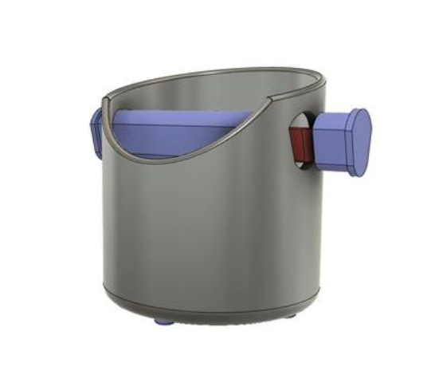

Final Project: An Espresso Knock Box
CONCEPT
Being an amateur barista and all-around coffee connoisseur, last year I bought myself a De'Longhi combination coffee and espresso maker. What I'd been missing, however, was a convenient way to remove and collect my coffee grounds... until now!

Espresso knock box components:
- A knock box (black PLA)
- A knock bar (stock part - steel rod covered in food-safe rubber exterior)
- 4 sticky "feet' (stock part - clear rubber "feet" adhered to bottom exterior of the knockbox to keep it from moving when in use)
- A molded and casted food-safe, gold-colored silicone part (placed at bottom interior of the knock box to absorb heat from hot coffee grounds)
USE CASE
The knock box is a super practical kitchen tool that simplifies the art of coffeemaking and makes it more environmentally friendly by incorporating a way to easily compost our coffee grounds. On the retail market, a knock box can cost anywhere from $15 to more than $100 depending on the brand, quality, and grade of materials used to produce it. For comparison, the materials for my DIY knock box cost less than $60 to make, and I'm very happy with the quality and finish!
This new tool also makes it easier to remove espresso grounds from the portafilter, saving me from knocking the grounds into the garbage can (so wasteful!) Collecting my coffee grounds in the new knock box made it easy to start a new "tiny habit" of composting them and using them as compost to enrich my garden soil. In addition, coffee grounds can be an effective, environmentally-friendly fertiizer for certain plants and flowers, and they can serve as a helpful natural pesticide to mitigate garden slugs and snails!
PROCESS
Ideation:
I kicked off my ideation process by searching Thingiverse for knock boxes that others have successfully made and reviewed. These particular designs were helpful departure points for kicking off some sketching at different points in my ideation:

FIELD/MARKET RESEARCH:
I also did some field research exploring different brands of knock boxes in the retail market. I wanted to touch different materials used to produce them and evaluate the interface between different knock boxes and knock bars to help inform my own design choices.
SKETCHING:
I sketched some ideas for how I could design various components of the knock box leaving some flexibility to pivot in a different direction in the event that I would run into any scheduling conflicts and/or could not secure the desired materials I was hoping to use for fabrication:
PROJECT AND TECHNIQUE PLANNING:
After landing on the design I wanted to move forward with, I created my high level project plan with a couple of contingencies built in based on the outcome of prototyping and materials testing. Below is the list of digital fabrication techniques that I initially planned to use for my final project with addition of a note indicating which techniques I incorporated into the final design and which ones I did not opt to incorporate:
1. Rhino - planned and imcorporated
2. Grasshopper - planned but NOT incorporated to save time for 3D printing, prototyping, and testing parts and materials
3. 3D printing - planned and incorporated (used 2 different printers and 3 different slicers during prototyping!)
4. Interface fits/intersecting parts (i.e., interface between the knock box and the knock bar) - planned and incorporated
5. Stretch goal: Molding and casting a "grippy" part to adhere to the bottom of the knock box in silicone - planned but pivoted to incorporate molding and casting a silicone component for the interior bottom of the knock box instead of the exterior bottom)
3D PROTOTYPING AND TESTING:
The image below shows the progression of my 3D print prototyping and materials testing, featuring 2 initial prototypes of the knock box in orange PLA (which didn't pass testing) and my final knock box printed in black PLA. The image also shows a knock bar that I printed in orange PLA from an STL on Thingaverse as an early prototype, plus the stock part knock bar in steel and rubber that I decided to buy (for $8) instead of make, a red, pre-fabricated silicone mold that I already owned and used to test the Composimold silicone, and some molded and casted silicone parts that I used to practice casting with Composimold.
CONTINGENCY PLANS INCORPORATED INTO THE FINAL PROJECT:
I ended up purchasing stock parts for the knock bar and self-adhesive feet (aka "sticky feet"). These pivots to stock parts were part of my project proposal. I purchased a knock bar with a steel center and rubber exterior to increase the overall strength of the design given that a significant force can be exerted on the knock bar when someone tries to remove coffee grounds from the portafilter. The pivot to buying self-adhesive, rubber feet was an easy time-saver in the overall schedule where more time could be allocated to 3D printing.
BREAKDOWN OF PROJECT TASKS AND TIMELINES:
1. November 23-30: Ideation/modeling in CAD and sourcing of materials (as a contingency on using TPU to print the knock bar, my backup plan was to either use PLA or buy a stock part for the knock bar - I decided to go with the stock part)
2. November 28-30: Refinement of CAD models in Rhino and Grasshopper (as a contingency for using Grasshopper to model a grippy part to adhere to the bottom exterior of the knock box, my backup plan was to buy stock "grippy" parts and adhere with glue - I opted not to use Grasshopper for this to save time, and I bought the stock part instead - 4 rubber feet which adhered nicely to the knock box and keep it from moving when knocked)
3. December 1-3: 3D printing and testing intersecting parts
(this took multiple iterations - I printed 2 prototypes before finalizing my design, and printed the final design in my third printing iteration). 4. December 2-3: (Stretch goal) Molding and casting the "grippy" part in silicone
(I completed a stretch goal of using molding and casting as one of my fabrication techniques - the food-safe silicone part placed in the bottom interior of the knock box to serve as a landing point for hot coffee grounds) 5. December 4-5: Assembling and testing (knocking!) the final espresso knock box
5. December 5: Documentation of my final project on GitHub! (this took one extra day than planned because I was celebrating on my birthday on December 5, yay!)
FINAL BILL OF MATERIALS:
1. CAD software (Rhino, used trial version available to students, free)
2. PLA filament (orange PLA, already owned and black PLA, borrowed for free from TA Junchao Wang - used knock box part as main design component as well as the mold to case Composimold food-safe part!)
3. Knock bar (steel rod interior covered by food-safe rubber exterior purchased on Espresso Parts.com, $8)
4. Composimold Firm (food-safe molding and casting material purchased at Artist and Craftsman, $47) to use for casting food-safe part to place at bottom interior of knock box
5. Clear Self-adhesive Round Bumpers, pack of 4 (stock part to adhere to bottom exterior of knock box for "knock" testing purchased at Artist and Craftsman, $2.50)
Total cost of final project: $57.50
RESOURCES
Espresso Knock Box in PLA and TPU
Treatstock: About Thermoplastic Polyurethane (TPU)
Knock Box for Expresso
Composting with Coffee Grounds
Make Your Own Food-safe Silicon Molds
Artist and Craftsman product listing for Composimold Firm
SOURCE FILES:
Rhino file for knock box
STL file for knock box
gcode for knock box printed with black PLA on a Prusa 3D printer in the university makerspace
Many thanks to the following people:
- HCDE 533 Professor Nadya Peek for always sharing helpful technical guidance, feedback, and recommendations!
- HCDE 533 Teaching Assitant Junchao Wang for Rhino modeling suggestions and for lending me the beautiful black PLA for 3D printing my final design!
- Fellow classmates Sara C, Nichelle, Vanessa, and several other students who provided ongoing 3D printing guidance and tips!
- Several members of the University of Washington MILL staff who provided empowerment and very helpful recommendations on 3D printer settings and configuration during prototyping - they are the best!